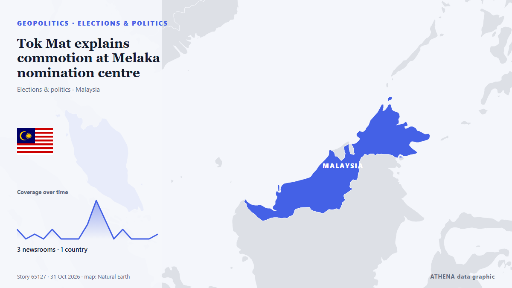

Tok Mat explains commotion at Melaka nomination centre

The BN deputy chairman says the EC informed party leaders at a briefing they could enter the centres, just not the halls where nominations are held. from Free Malaysia Today
Reported independently by 3 outlets in 1 country since 30 Oct, first by New Straits Times; coverage is fading. ATHENA finds no risk indicators in the coverage. Confidence is 59% (moderate), with 3 independent outlets corroborating it and an average source reliability of 74%. Newsrooms by country: Malaysia (23). Coverage: 30 Oct to 31 Oct, 33 hours.
Why it matters: Security and diplomatic developments can shift alliances, trade and markets well beyond the countries directly involved.
What changed: 18 new reports from 3 newsrooms in the 24 hours to 31 Oct.
First reported as: Melaka polls: Fire Dept conducts safety checks at nomination, vote-tallying centres
At a glance
Selected, scored and written by ATHENA's published methodology. No editor intervenes in individual events. How this is produced ›
| 30 Oct 07:24 UTC | 2 |
|---|---|
| 30 Oct 09:24 UTC | 0 |
| 30 Oct 11:24 UTC | 1 |
| 30 Oct 13:24 UTC | 0 |
| 30 Oct 15:24 UTC | 2 |
| 30 Oct 17:24 UTC | 0 |
| 30 Oct 19:24 UTC | 0 |
| 30 Oct 21:24 UTC | 0 |
| 30 Oct 23:24 UTC | 3 |
| 31 Oct 01:24 UTC | 8 |
| 31 Oct 03:24 UTC | 4 |
| 31 Oct 05:24 UTC | 0 |
| 31 Oct 07:24 UTC | 2 |
| 31 Oct 09:24 UTC | 0 |
| 31 Oct 11:24 UTC | 0 |
| 31 Oct 13:24 UTC | 0 |
| 31 Oct 15:24 UTC | 1 |
Why these numbers
Importance
Risk
Confidence
The reporting — who reported it, and when
headline as published · opens the original- New Straits Times · MalaysiaEC: 687,697 registered voters eligible for Melaka election
- Malay Mail · MalaysiaMelaka polls: Fire Dept conducts safety checks at nomination, vote-tallying centres
- New Straits Times · MalaysiaMelaka polls: Clear skies expected on nomination morning
- Free Malaysia Today · MalaysiaMelaka DAP sets out to hold 4, win 3 at state polls
- New Straits Times · MalaysiaJohor Umno to mobilise machinery to help BN win Melaka election
- New Straits Times · Malaysia16th Melaka election kicks off with nomination process today [WATCH]
- Malay Mail · MalaysiaNomination day is here: Melaka’s 14-day campaign starts today
- Malay Mail · MalaysiaSeven candidates, seven seats: DAP’s Melaka game plan
- New Straits Times · MalaysiaMelaka polls: Party cheers, chants mark nomination day in Machap Jaya
- Malay Mail · MalaysiaSupporters out by 7am as Melaka candidates file their papers
- New Straits Times · MalaysiaMelaka polls: Four parties bring colourful atmosphere to Klebang nomination centre
- New Straits Times · MalaysiaMelaka polls: 'Uncle Wong', 'Dak Nor' show up for BN's Duyong candidate's nomination
- New Straits Times · MalaysiaMelaka polls: Tok Mat accompanies BN's Lendu candidate to nomination centre
- New Straits Times · MalaysiaMelaka polls: All 28 candidate nomination centres close at 10am
- Malay Mail · MalaysiaMelaka nominations closed: 28 centres, one hour, and now the race is on
- New Straits Times · MalaysiaMelaka polls: Nominations smooth, say police
- Free Malaysia Today · MalaysiaLess crowded field in Melaka polls with 79 candidates contesting 28 seats
- New Straits Times · MalaysiaMelaka polls: Full list of candidates
- New Straits Times · MalaysiaMelaka polls see a less crowded field than in 2021 state election
- Malay Mail · MalaysiaEC: 79 candidates, including 14 women, to contest 28 Melaka seats, with 11 straight fights and six four-cornered contests
- Malay Mail · MalaysiaNo five- or six-cornered fights in 28 seats: Melaka’s 2026 ballot looks very different from 2021
- Free Malaysia Today · MalaysiaTok Mat explains commotion at Melaka nomination centre
- New Straits Times · MalaysiaTok Mat says EC officers stopped him from entering nomination centre